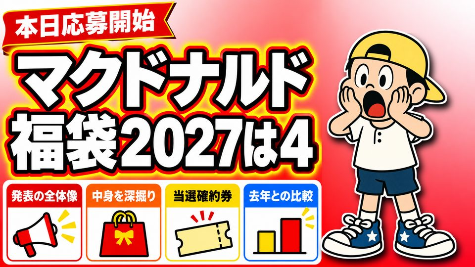
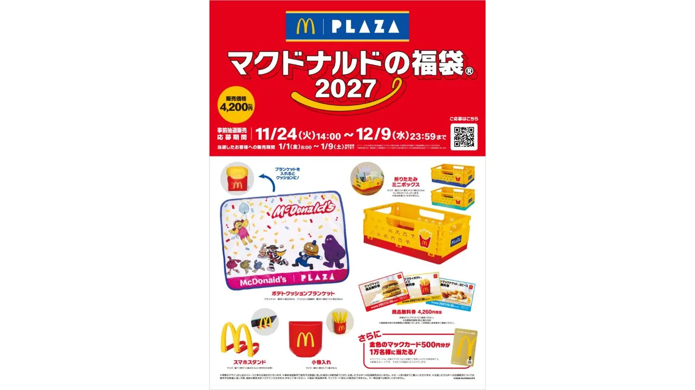
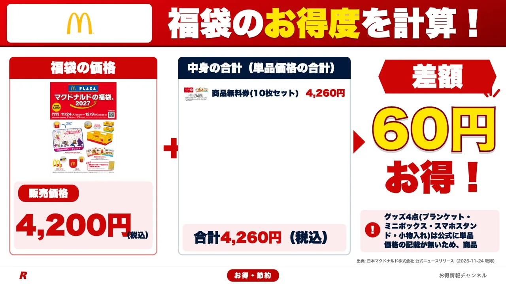
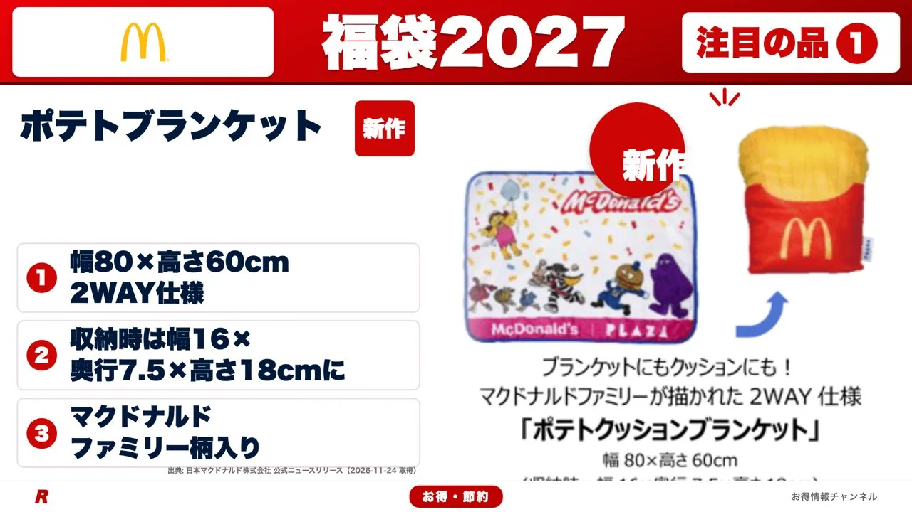
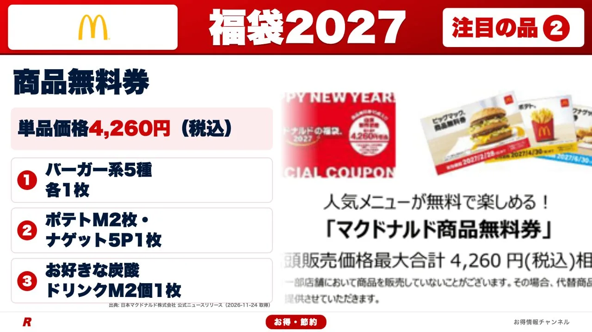
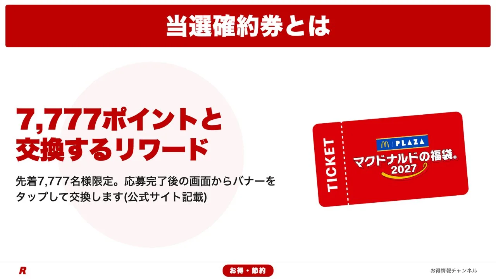
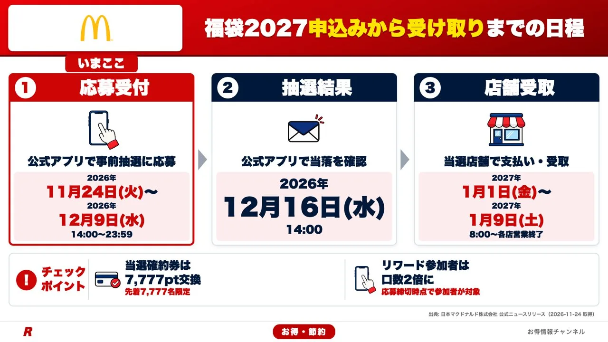
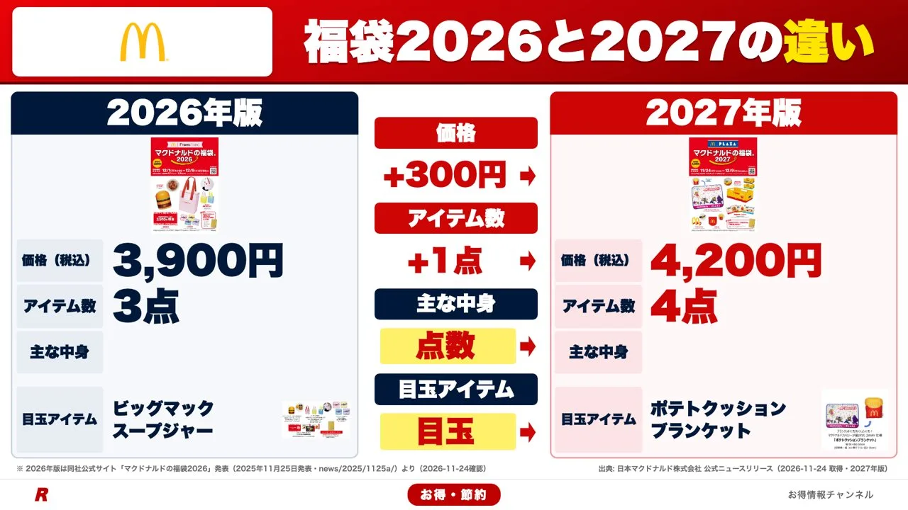

マクドナルドの福袋2027が、2026年11月24日に発表されました。ライフスタイルストア「PLAZA」との初コラボで、価格は4,200円（税込）。グッズ4点と、店頭販売価格最大合計4,260円相当の商品無料券がセットになっていて、無料券の金額だけで福袋の値段を60円上回ります。今年は新しく「当選確約券」という仕組みも登場しました。公式発表の情報だけで、中身・応募方法・去年との違いをまとめます。

▶ この記事の内容を動画で見る（特集の記事）
01価格とお得度｜無料券だけで元が取れる計算
販売価格は4,200円（税込）。内容物は、グッズ4点（ポテトクッションブランケット・折りたたみミニボックス・スマホスタンド・小物入れ）と、店頭販売価格最大合計4,260円相当の商品無料券（10枚セット）です。
| 項目 | 金額 |
|---|---|
| 福袋の販売価格 | 4,200円 |
| 商品無料券の合計（公式記載） | 4,260円相当 |
| 差額 | +60円（無料券だけで福袋代を上回る） |
ポイントグッズ4点は公式に単品価格の記載が無いため、この計算には含めていません。つまりグッズ4点は実質まるごとおまけという計算になります。

02中身5点｜ブランケットと商品無料券10枚の内訳
目玉は、畳むとマックフライポテト型のクッションに変身する「ポテトクッションブランケット」（2WAY仕様）。ほかに折りたたみミニボックス（全3色のうちランダム1つ・色は選べません）、スマホスタンド、小物入れが入ります。

商品無料券は計10枚。ビッグマック、ザクザクジューシーマック（通常・スパイシー各1枚）、てりやきマックバーガー、ベーコンレタスバーガー、フィレオフィッシュが各1枚、マックフライポテトМサイズが2枚、チキンマックナゲット5ピースが1枚、お好きな炭酸ドリンクМサイズ2個が1枚という内訳です。有効期限は券の種類によって違い、確認できた範囲では2027年2月28日・4月30日・6月30日の3段階に分かれています。

03当選確約券とは｜7,777ポイントで先着7,777名限定
今年新しく登場したのが「当選確約券」です。Myマクドナルドリワード（公式アプリの無料ポイントプログラム）で7,777ポイントと交換すると、事前抽選に必ず当選できます。ただし先着7,777名限定で、なくなり次第終了します。
注意当選確約券だけでは福袋を購入できません。当選通知後、販売期間中に当選店舗へ来店し、4,200円の支払いと受け取りが必要です。
Myマクドナルドリワードに参加しているだけでも、応募締切時点で応募口数が1口から2口に増えます（当選確約券を使わない場合でも対象）。

04応募から受け取りまでのスケジュール
| 期間 | 内容 |
|---|---|
| 11月24日14:00〜12月9日23:59 | 公式アプリで事前抽選に応募 |
| 12月16日14:00 | 抽選結果発表（公式アプリ上） |
| 2027年1月1日8:00〜1月9日 | 当選店舗で4,200円を支払い受取 |
応募希望店舗は第3希望まで指定し、当選した場合は当選画面に記載された店舗でのみ購入・受け取りができます（一部店舗は対象外）。購入は1人1個まで、応募完了後のキャンセル・変更は一切できません。

05去年（福袋2026）との違い
去年はインテリアブランドFrancfrancとの初コラボで、価格3,900円・グッズ3点・商品無料券3,910円相当でした。今年は価格が300円上がった一方、グッズは1点増え、無料券の総額も350円増えています。応募期間も去年の9日間から16日間に延長されました。また、去年は応募にMyマクドナルドリワード50ポイントの保有が必須条件でしたが、今年の発表文には同様の必須条件の記載が見当たりません。

06よくある質問
当選確約券だけで福袋を買えますか？
買えません。当選確約券は抽選に必ず当選できる券で、当選通知後に販売期間中へ当選店舗に来店し、4,200円の支払いと受け取りが必要です。
折りたたみミニボックスの色は選べますか？
選べません。全3色のうちいずれか1つがランダムで届きます。
応募後にキャンセルはできますか？
できません。応募完了後のキャンセルまたは変更は一切できないため、申し込む前に内容をよく確認してください。
抽選に外れても店頭で買えますか？
基本的には当選者以外への店舗販売は行われません。ただし在庫状況によっては店頭販売の可能性もあると公式に記載されています。
07まとめ
マクドナルドの福袋2027は、価格4,200円に対して商品無料券だけで4,260円相当という、無料券だけで元が取れる内容になっています。応募は本日2026年11月24日14:00から12月9日23:59まで。当選確約券（7,777ポイント・先着7,777名限定）を使うか、Myマクドナルドリワードに参加して口数を増やすかを検討しつつ、締切前に公式アプリから応募しておきましょう。